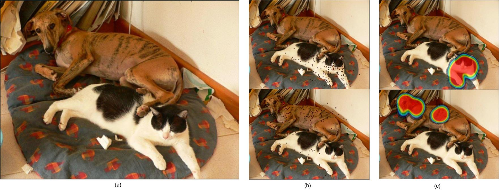
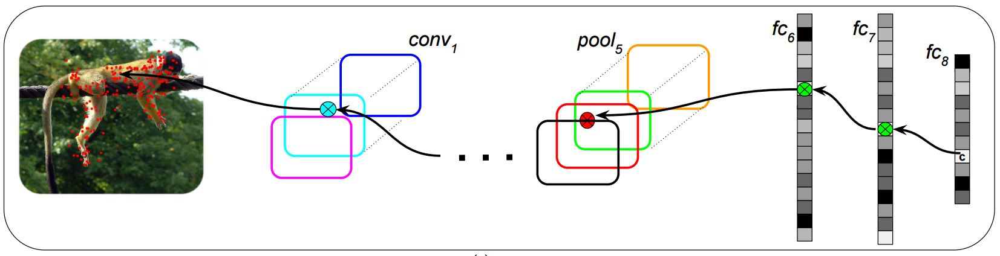
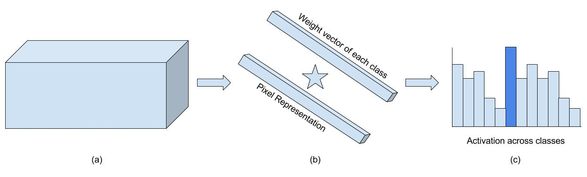

Seg-Unravel
16 May 2017Introduction
Semantic segmentation is the task of assigning a label to each pixel in the image.In recent years, deep convolutional neural networks have been driving advances in multiple tasks related to cognition. Although, DCNNs have resulted in unprecedented visual recognition performances, they offer little transparency. To understand how DCNN based models work at the task of semantic segmentation, we try to analyze the DCNN models in semantic segmentation. We try to find the importance of global image information for labeling pixels.
Based on the experiments on discriminative regions, and modeling of fixations, we propose a set of new training loss functions for fine-tuning DCNN based models. The proposed training regime has shown improvement in performance of DeepLab Large FOV(VGG-16) Segmentation model for PASCAL VOC 2012 dataset. However, based on further tests with other models, we found the improvements made by the proposed loss minimal. Hence, this work did not lead to a Conference publication. I believe it still holds value in showing the ideas used in this paper, which might just work well with few changes. At the least, this work encapsulates a possible pitfall.
Segmentation Unravel

Although DCNNs have demonstrated outstanding performance for recognition tasks such as hand written character recognition and object classification, they offer limited transparency.One way to understand CNNs is to look at the important image regions that influence it’s prediction.Such regions might also offer visual explanations in terms of the responsible image regions that misguide the CNN, when the predictions are not accurate.
[1] proposes an approach to determine the important image regions that guide the model to its inference. As they are modeled analogous to human eye fixations, they are called CNN-fixations. The approach traces the evidence for a given neuron activation, in the preceding layers.CNN-fixations is a visualization technique, based on this approach.It highlights the image locations that are responsible for the predicted label. High resolution and discriminative localization maps are computed from these locations. In presence of multiple objects, they can sequentially discover individual objects and obtain their localization maps.
CNN-fixations is a visualization technique for highlighting image locations responsible for the predicted label. In work for the dissertation, this concept was extended to segmentation networks. The task now at hand is to highlight image regions which were responsible for the segmentation predicted by the network. It entails to finding, for each label detected,image regions which highly encouraged its labeling. Just as in CNN-fixations, we rely on the unraveling of strong neural activation pathways from the output to the input to find such regions. At each spatial location in the output, we have a predicted label.

Many Experiments in the Dissertation explore how the neural pathways unravel. With the help of this, we also perform experiments for the salient parts of object, which help in the segmentation.
Auxiliary Loss

Experiments in the Dissertation show presence of discriminative regions of object, which boost the activation for the object across the object segmentation in the image. This shows that a successful segmentation model will capture the presence of discriminative region, and propagate additional activation for the object to all regions of the object. We introduce a family of loss function with this goal in mind.
Additionally, there are many unique labels which end up with highly correlated internal abstract representations in the model. Often objects of one of the correlated label is partially segmented as the object it is correlated to. This family of loss function additionally tries to decrease this similarity.
The Crux of the proposed losses is to select the best class template for each class present in the image, and try to increase the similarity between the class templates and respective class pixels. The templates are selected at the pre-softmax layer,and loss is computed with the pre-softmax representation for each pixel in the image. Similarity is measured using Correlation and Cosine between the generated vectors.
The paper shows improvement in the performance of DeepLab Large FOV architecture, introduced in [2]. However, this increase in performance can be attributed to the change in optimisation(Poly-rate decay instead of step-decay). Further experiments showed weak improvements (i.e. 0.5% improvement in Mean IOU) for Other models.
References
Links
The code for this paper has been written in python on Pytorch as well as Tensorflow.You can,